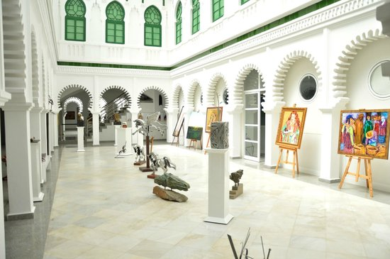
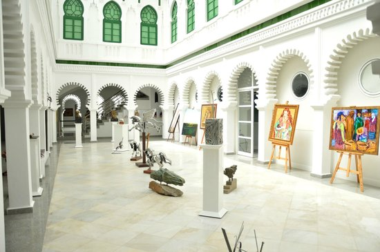
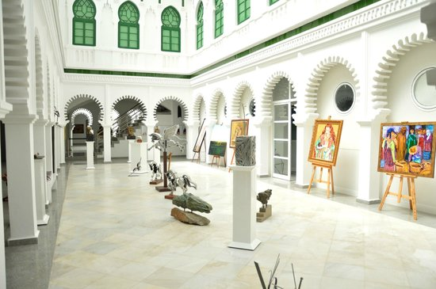

Tétouan
Tétouan est considérée comme "la ville la plus andalouse du Maroc". De part son histoire et sa situation géographique celle-ci a toujours eu un lien très fort avec l'Espagne et l'Andalousie en particulier.
 

Tétouan est considérée comme "la ville la plus andalouse du Maroc". De part son histoire et sa situation géographique celle-ci a toujours eu un lien très fort avec l'Espagne et l'Andalousie en particulier.
